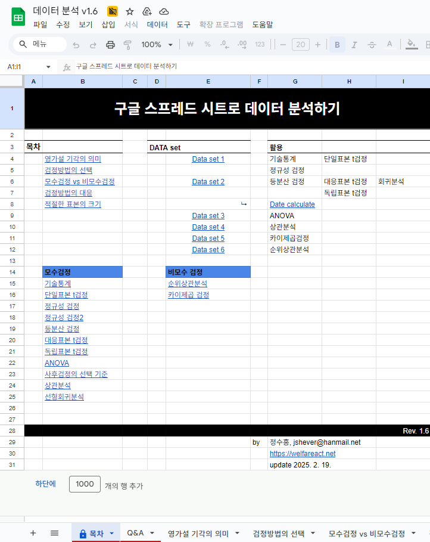

<div class="content-section">
    <div class="responsive-intro-grid">
        <!-- 좌측: 설명 및 버튼 -->
        <div class="intro-text">
            <h2>기초 통계 분석</h2>
            <p class="tagline">"스프레드시트를 활용한 자동 데이터 분석"</p>
            <p class="description">
                기본적인 통계 분석을 위해 구글 스프레드시트를 활용한 자동화 도구를 제공합니다.
                데이터셋 선택 후 관찰값을 입력하면 실시간으로 분석 결과가 산출됩니다.
            </p>

            <div class="usage-steps"
                style="background: #f8f9fa; padding: 25px; border-radius: 12px; margin: 30px 0; border: 1px solid #eee;">
                <h4 style="margin-top: 0; margin-bottom: 15px; color: #333;">💡 사용 방법</h4>
                <ol style="margin: 0; padding-left: 20px; line-height: 1.8; color: #555;">
                    <li>기본적인 통계 이론에 대한 이해를 바탕으로 시작합니다.</li>
                    <li>분석하려는 <strong>변수의 수</strong>에 맞는 Data set을 선택합니다.</li>
                    <li>조사된 관찰값을 입력 시트에 붙여넣습니다.</li>
                    <li>분석 도구를 선택하면 자동으로 결과가 산출됩니다.</li>
                </ol>
            </div>

            <div class="cta-buttons" style="justify-content: flex-start;">
                <a href="https://docs.google.com/document/d/1Cg-tf54kb2PbBgolP3Rglf3WjPvpScF2Np7fuW8FRAo/edit?usp=sharing"
                    target="_blank" class="btn btn-primary"
                    style="display: inline-flex; align-items: center; gap: 8px;">
                    <span>📊</span> 도구(v1.6) 사용하기
                </a>
            </div>
        </div>

        <!-- 우측: 스크린샷 -->
        <div class="profile-image-area">
            <div class="profile-image-box" style="height: auto; min-height: 300px;">
                
            </div>
            <p style="margin-top: 15px; color: #888; font-size: 0.9rem; text-align: center;">기초 통계 분석 인터페이스 예시</p>
        </div>
    </div>
</div>